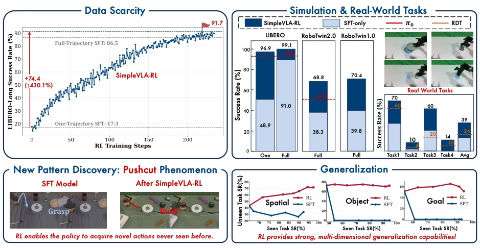
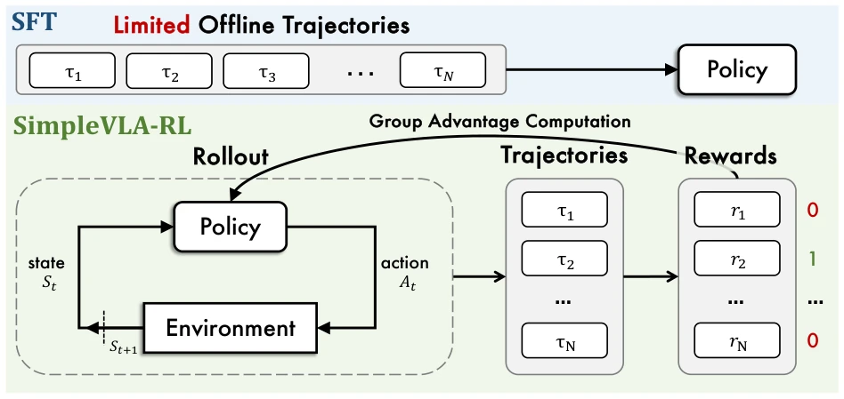
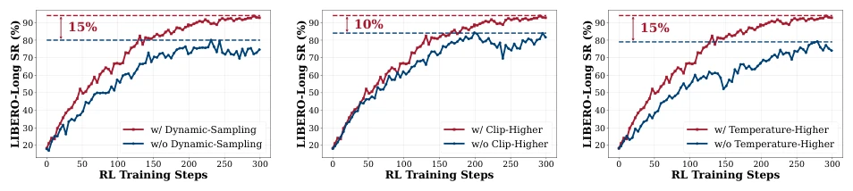

This paper attempts to enable reasoning capabilities in VLA models using reinforcement learning, similar to how LLMs handle reasoning. The highlights are indeed impressive, achieving 99% on LIBERO, and discovering "Pushcut" maneuvers that SFT cannot learn, proving RL can mine new strategies. But don't get too excited too soon; this still requires SFT initialization first, pure RL starting from scratch fails completely, indicating model priors are important. Moreover, it relies mainly on simulation training; while real-world deployment improved, essentially it is still "train in simulation, gamble on real hardware", and Sim-to-Real still has a gap. Is the so-called "Pushcut" phenomenon just a physical coincidence in the simulator? Data scarcity is a pain point, but RL training costs are not low either; running on 8 A800s is quite expensive and relies on the veRL framework. Overall, it is an effective supplement to the VLA training paradigm, proving the value of RL when data is scarce, but it is still far from "general embodied intelligence"; do not treat RL as a panacea, engineering deployment still depends on cost-effectiveness.
研究动机Motivation
VLA 模型发展面临两大瓶颈：一是高质量人类操作轨迹数据稀缺且昂贵，大规模 SFT 难以扩展 [Kim et al., 2024]；二是分布外泛化能力差，遇到未见任务性能骤降 [Liu et al., 2025a]。虽然 LLM 领域通过 RL 实现了推理能力的飞跃 [Guo et al., 2025a]，但 VLA 的长视界规划能否复用这一路径尚不明确。现有 SFT 依赖大量演示数据，采集成本高且难以覆盖长尾场景 [Mandlekar et al., 2021]。此外，传统 RL 方法多依赖手工过程奖励，扩展性差。本文旨在探索基于结果奖励的在线 RL 框架，减少对演示数据的依赖，并提升模型在复杂任务中的泛化与策略发现能力，验证 RL 在具身智能中的潜力。
The development of VLA models faces two major bottlenecks: first, high-quality human manipulation trajectory data is scarce and expensive, making large-scale SFT difficult to scale [Kim et al., 2024]; second, out-of-distribution generalization capability is poor, with performance dropping sharply when encountering unseen tasks [Liu et al., 2025a]. Although the LLM field has achieved a leap in reasoning capabilities through RL [Guo et al., 2025a], it remains unclear whether VLA's long-horizon planning can reuse this path. Existing SFT relies on large amounts of demonstration data, with high collection costs and difficulty covering long-tail scenarios [Mandlekar et al., 2021]. In addition, traditional RL methods mostly rely on manual process rewards, with poor scalability. This paper aims to explore an online RL framework based on outcome rewards, reduce dependence on demonstration data, and improve the model's generalization and strategy discovery capabilities in complex tasks, verifying the potential of RL in embodied intelligence.
The overall process is based on the veRL framework, adopting a "Pre-training + SFT + RL" two-stage paradigm. The core innovation lies in adapting VLA's interactive Rollout and GRPO optimization. First, VLA needs to interact with the environment for multiple rounds to generate trajectories; unlike LLM's autoregressive text generation, this involves visual observation updates and action execution, requiring parallel environment rendering acceleration. Second, simple binary outcome rewards (Success 1/Failure 0) are adopted, avoiding complex process reward design and reducing engineering difficulty. To enhance exploration, three strategies are proposed: 1) Dynamic sampling, removing groups that are all success or all failure to maintain gradients and prevent gradient vanishing; 2) Increase Clip range to [0.8, 1.28], allowing higher probability updates; 3) Increase Rollout temperature to 1.6, increasing action diversity. In addition, KL regularization is removed to reduce memory usage and encourage policy divergence. Finally, the policy is updated through the GRPO objective function, achieving end-to-end online training and supporting large-scale parallelization.

Figure 1 | Overview of SimpleVLA-RL. SimpleVLA-RL is an efficient RL framework for VLA that im- proves long-horizon planning under data scarcity, outperforms SFT in simulation and real-world tasks, reveals a “pushcut” new-action phenomenon, and strengthens spatial/object/goal generalization.

Figure 2 | Overview of SimpleVLA-RL.

Figure 3 | The effectiveness of three key enhancements: dynamic sampling, higher rollout temperature, and clip higher.
Evaluated on LIBERO, RoboTwin 1.0/2.0, and real robots. Baselines include OpenVLA, pi0, UniVLA, etc. The metric is Success Rate (SR). Results show that SimpleVLA-RL achieves an average SR of 99.1% on LIBERO, surpassing SOTA. Under data-scarce scenarios (single-trajectory SFT), RL improves LIBERO-Long success rate from 17.3% to 91.7%, proving extremely high data efficiency. Generalization analysis indicates that RL outperforms SFT on unseen tasks, avoiding catastrophic forgetting, especially in spatial and object generalization. In Sim-to-Real experiments, real success rate improved from 17.5% to 38.5%, without requiring real data. In addition, the "Pushcut" phenomenon was observed, where the model learned to push objects directly without grasping, discovering new strategies. Ablation experiments show that dynamic sampling and high-temperature sampling significantly improve performance, verifying the effectiveness of exploration strategies.